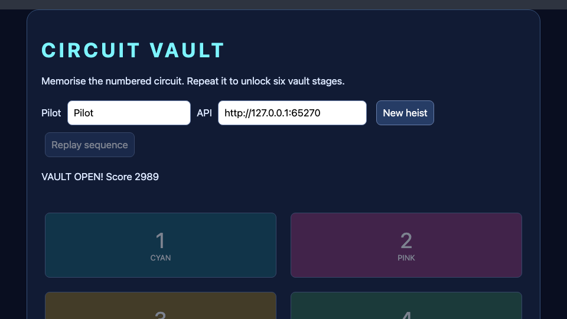

T36 Circuit Vault — a web game with a real Node server
Build Circuit Vault, a neon memory-heist game. Watch a circuit light up, repeat its numbered pads and unlock six stages. A mistake or late input spends one of three lives. Completing stages earns a speed-sensitive score and opening the vault puts your pilot on a local top-ten leaderboard.
The browser really calls a Node server. The server stores each run, checks inputs, advances stages and calculates scores. This is not a simulated fetch returning a hard-coded response. There are no npm packages: Node's built-in HTTP, crypto, file and path modules are enough.
Allow two hours. You need Node 22 or later and Nord. Download the full source project, extract it, and open nord.project.json in Nord. The HTML tier has no scene hierarchy to assemble; the files are the app. You will edit app.js, rules.mjs, server.mjs and style.css in Nord's code editor.

1. Run both halves and understand their jobs#
From the extracted project folder:
node --version
node server.mjsLeave that terminal running. Open http://127.0.0.1:4381 in a browser. Enter a pilot name and choose New heist. Watch the first pad flash, then press that numbered pad. The sequence grows by one pad each stage. Replay sequence shows it again; its animation does not stop the server's deadline.
You can also press Play in Nord while Node stays running. Nord serves the client on its own local origin, and the API field points at http://127.0.0.1:4381. This intentionally uses two local servers: Nord previews your files, while Node runs your backend. The browser enforces CORS between those origins; step 7 explains the permission.
If you change PORT when starting Node, change the API field too:
PORT=4382 node server.mjsStop Node with Ctrl+C. A static host cannot execute server.mjs. The game needs the Node process to start or submit a run; exported frontend files alone are not an offline substitute for its API.
Checkpoint: a real request to /api/start appears in the browser Network panel when you start a heist. Stop Node and try again: the app should show a connection error rather than pretend to start.
2. Define a small HTTP contract#
Use these routes:
| Method/path | Request | Response |
|---|---|---|
POST /api/start |
{ "name": "Pilot" } |
Run id and initial public state |
POST /api/step |
{ "id": "…", "tile": 0 } |
Updated public state |
GET /api/board |
No body | Sorted top-ten entries |
Tile indices are zero through three even though the visible labels are one through four. This is a common boundary worth writing down: the button's data-tile holds the index; its text gives the player-friendly number.
The client sends an input, not a claimed score. The server looks up the run and calculates the result. A request such as {score:999999} has no scoring meaning. However, this remains a local teaching game: the displayed sequence is necessarily available to the client, so an automated client can play perfectly. Server-owned rules are useful, but they do not make this demonstration cheat-proof or a production multiplayer service.
Exercise: before coding, predict which side should own the flashing animation, random sequence, input cursor, life counter and error message. The first and last belong to the browser; the run rules belong to Node.
3. Write rules without HTTP or DOM#
Open rules.mjs. Start with the run factory:
export function newRun(random = Math.random, now = Date.now()) {
return {
sequence: Array.from({ length: 6 }, () => Math.floor(random() * 4)),
round: 1, cursor: 0, lives: 3, score: 0,
done: false, won: false, deadline: now + 15000,
};
}A factory returns fresh state rather than sharing a global run between players. Array.from builds six indices. Math.floor(random()*4) yields 0, 1, 2 or 3. The optional random/now parameters are test seams: tests can supply deterministic values instead of waiting or relying on luck.
The step function takes a run and one input. It returns immediately for a finished run. A wrong or expired input spends a life, resets the cursor and gives another fifteen-second input deadline. Three mistakes finish a loss. Correct input advances cursor; finishing a stage awards points and grows the stage, or wins after stage six.
if (run.done) return publicRun(run);
if (now > run.deadline || tile !== run.sequence[run.cursor]) {
run.lives--;
run.cursor = 0;
run.deadline = now + 15000;
if (run.lives === 0) run.done = true;
return publicRun(run);
}The deadline is checked when an input arrives. This server does not run a background timer that changes lives while nobody is clicking. At exactly the deadline the input is still allowed; after it, the next input consumes a life. A correct input refreshes the allowance for the next one.
publicRun returns a copy with only the current stage's sequence prefix. The full six-item plan stays on the server until its later stages. A repeated request after victory cannot award the win twice because done is checked first.
Checkpoint: read the pure tests in the engine's tools/advanced-workshops.test.mjs if working from a checkout. They finish all stages with a fixed random source and verify wrong/expired input, lives and repeated finish. The project archive contains the complete playable rules; no test-only shortcut is needed in the game.
4. Make a real server and store sessions#
Open server.mjs. The server factory owns two collections:
const runs = new Map(), board = [];A Map associates an opaque run id with its state. randomUUID() makes the id; the client keeps it and sends it with later inputs. The board stores only finished names/scores and is sorted descending, then capped at ten.
Node's request is a readable stream. The server reads it with for await, limits it to 2 KB and parses JSON inside a try/catch. It rejects invalid JSON, non-object bodies, missing runs and out-of-range tile indices. These checks happen before calling the game rules.
if (!Number.isInteger(body.tile) || body.tile < 0 || body.tile > 3) {
return reply(400, { error: 'Tile must be 0–3' });
}reply sets a JSON content type and no-store before ending the response. Every branch returns after replying, so the request is not accidentally answered twice. A finish transition checks wasDone before inserting a leaderboard row, preserving one entry even if the browser retries an already-finished input.
The server limits active runs to 500 and removes abandoned runs older than thirty minutes when starting another run. This bounds the teaching process's memory. It is not durable storage: stopping Node forgets runs and the board. Do not promise users that their records survive a process restart.
Checkpoint: open /api/board directly; it returns JSON. Request /server.mjs; it returns 404, because the small static-file allowlist exposes only index.html, app.js and style.css.
5. Call the API from the browser#
The HTML-tier entry point exports mount(root). Nord's generated index.html imports and calls it. This is different from NordScript: there is no entity attachment. mount builds the DOM once and wires handlers.
The API helper uses fetch:
const response = await fetch(new URL(route, base), {
method: body ? 'POST' : 'GET',
headers: body ? { 'content-type': 'application/json' } : {},
...(body ? { body: JSON.stringify(body) } : {}),
signal: AbortSignal.timeout(5000),
});
const data = await response.json();
if (!response.ok) throw Error(data.error || `HTTP ${response.status}`);async makes a function return a Promise; await suspends that function while the browser handles other work. It does not freeze rendering. JSON.stringify turns an object into the request text; response.json parses the reply. A 400/404 reply does not automatically reject fetch, so checking response.ok is essential.
The timeout prevents a dead server from leaving buttons disabled forever. Errors become a visible status message. They are not converted into fake wins or local scores.
Checkpoint: edit the API field to an unused local port and start a heist. You should get the connection message, then be able to correct the address and try again. For intentional connection-failure tests a browser Network error is expected.
6. Prevent racing clicks and explain animation#
The client keeps busy and replaying flags. controls disables input while a request or sequence animation is in progress. Each handler also checks those flags, so rapidly clicking cannot enqueue multiple inputs before the previous response is applied.
if (busy || replaying || !run || run.done) return;
busy = true;
controls();After a request the client replaces its displayed run with the server response. It does not increment the score optimistically. The finally block clears busy even after an error, which is why retry remains possible.
Replay loops through the current sequence, adds the lit CSS class, waits 350 ms, removes it, then waits another 150 ms. The helper delay returns a Promise wrapping setTimeout. The generation token marks an animation's run, and starting a new heist increments it. The current buttons also prevent new heists while replay is running.
The leaderboard uses created li elements and textContent, not innerHTML, for pilot names. A pilot called <b>Pilot</b> appears literally rather than becoming markup. The page itself is not an HTML string: ui/vault.ui.json describes it and createUI(root).load() builds it (edit it in the UI Designer).
Checkpoint: double-click a pad and compare the cursor with the intended single input. Then win a run under a name containing angle brackets; inspect the displayed text. It should not create HTML elements.
7. Understand local CORS and hosting boundaries#
When Nord serves the frontend and Node serves the API, their ports differ. Browsers treat that as different origins. The JSON POST triggers a preflight OPTIONS request. The server accepts HTTP origins on localhost/127.0.0.1, reflects the accepted origin, and allows the JSON content header and required methods.
It listens on 127.0.0.1, so it is a local development service. It rejects arbitrary web origins; it does not use a wildcard CORS policy. This is enough for your local Nord/browser workflow, not a substitute for authentication, TLS, persistence, request throttling or deployment design.
For public hosting, configure one real HTTPS origin, deploy the backend, and change the frontend endpoint. An HTTPS page cannot generally call this HTTP loopback service because of browser policies. Do not upload server.mjs to static hosting and expect it to execute.
Checkpoint: Nord Play can make a real call while Node runs. The same game served directly by Node also works. Opening index.html with file:// is not the supported workflow: run one of the HTTP servers.
8. Export and test the actual frontend/backend pair#
From the project parent folder:
nord check circuit-vault
nord build circuit-vault --target html --out vault-web --zip
node circuit-vault/server.mjs --root vault-webThe --root option makes the original Node process serve the exported frontend files while using its own rules module. Open http://127.0.0.1:4381, start a new heist and complete all six stages. The HTML export also copies the project source files, but static hosting still cannot run their server entry point; the command above is the explicit backend step.
Test these cases: a wrong first pad, an input after fifteen seconds, replay mid-stage, full victory, repeated input after victory, refresh/new run and a stopped/restarted server. A new server loses old run ids; the frontend should instruct you to start again.
Advanced extensions: persist the board to a crash-safe JSON file; add a daily seed; add client keyboard bindings; turn deadline checks into server-pushed events. Introduce each feature with an explicit API contract. If adding retry-on-network-error, also add an input sequence number/idempotency rule so an uncertain repeated request cannot count twice.
Complete source#
All browser, stylesheet, Node and rule-module source is included below. The complete project zip includes these files, Nord metadata, generated HTML and licence. Start the source with Node as described above; use Nord's HTML-tier Play/code editor to learn the frontend workflow.
app.js#
import { createUI } from './lib/nord-ui.js';
export async function mount(root) {
// The page is described in ui/vault.ui.json (edit it in the UI Designer); this file only wires it up.
const menu = await createUI(root).load('ui/vault.ui.json');
const $ = s => menu.shadow.querySelector(s); // ids come from the node names in the UI file
let id, run, busy = false, generation = 0, replaying = false;
const status = text => { $('#status').textContent = text; };
const delay = ms => new Promise(resolve => setTimeout(resolve, ms));
function controls() {
$('#start').disabled = busy || replaying;
$('#replay').disabled = busy || replaying || !run || run.done;
menu.shadow.querySelectorAll('[data-tile]').forEach(b => b.disabled = busy || replaying || !run || run.done);
}
async function api(route, body) {
const base = new URL($('#api').value);
const response = await fetch(new URL(route, base), {
method: body ? 'POST' : 'GET', headers: body ? { 'content-type': 'application/json' } : {},
...(body ? { body: JSON.stringify(body) } : {}), signal: AbortSignal.timeout(5000),
});
const data = await response.json();
if (!response.ok) throw Error(data.error || `HTTP ${response.status}`);
return data;
}
async function leaderboard() {
const { board } = await api('/api/board');$('#board').replaceChildren();
for (const row of board) { const li = document.createElement('li');li.textContent = `${row.name} — ${row.score}`;$('#board').append(li); }
}
function draw() {
status(run.done ? (run.won ? `VAULT OPEN! Score ${run.score}` : 'Alarm! No lives left. Start a new heist.')
: `Stage ${run.round}/6 | Input ${run.cursor}/${run.round} | Lives ${run.lives} | Score ${run.score}`);
controls();
}
async function replay() {
if (!run || run.done || replaying) return;
replaying = true;controls();const token = generation;
status('Watch the circuit…');
for (const tile of run.sequence) {
if (token !== generation) break;
const button = $(`[data-tile="${tile}"]`);button.classList.add('lit');await delay(350);button.classList.remove('lit');await delay(150);
}
replaying = false;draw();
}
$('#replay').onclick = () => replay();
$('#start').onclick = async () => {
if (busy || replaying) return;busy = true;controls();generation++;
try { const data = await api('/api/start', { name: $('#pilot').value });id = data.id;run = data.run;await leaderboard();busy = false;await replay(); }
catch (e) { status(`Connection failed: ${e.message}. Run node server.mjs and check the API field.`); }
finally { busy = false;controls(); }
};
for (const button of menu.shadow.querySelectorAll('[data-tile]')) button.onclick = async () => {
if (busy || replaying || !run || run.done) return;busy = true;controls();const round = run.round;
try { ({ run } = await api('/api/step', { id, tile: Number(button.dataset.tile) }));draw();
if (run.done) await leaderboard();else if (run.round !== round) { busy = false;await replay(); }
} catch (e) { status(`Request failed: ${e.message}. Start a new heist if the server restarted.`); }
finally { busy = false;controls(); }
};
controls();
}Complete index.html
<!doctype html>
<html lang="en"><head><meta charset="utf-8"><meta name="nord-app-id" content="com.crowelian.circuitvault"><meta name="viewport" content="width=device-width,initial-scale=1"><title>Circuit Vault — Node game workshop</title>
<style>html,body{margin:0;height:100%;background:#2e3440}#app{height:100vh}</style></head>
<body><div id="app"></div>
<script type="module">
import { mount } from './app.js';
try { await mount(document.getElementById('app')); window.__nord_ready = true; } catch (e) { console.error(e); window.__nord_error = String(e); }
</script></body></html>Complete nord.project.json
{
"format": 1,
"name": "Circuit Vault",
"id": "com.crowelian.circuitvault",
"type": "html",
"engineVersion": "0.1.0",
"startScene": "",
"display": {
"width": 640,
"height": 360,
"scale": "fit",
"pixelArt": false,
"background": "#2e3440"
},
"physics": {
"engine": "none",
"gravity": [
0,
0,
0
]
},
"input": {
"actions": {
"left": [
"KeyA",
"ArrowLeft"
],
"right": [
"KeyD",
"ArrowRight"
],
"up": [
"KeyW",
"ArrowUp"
],
"down": [
"KeyS",
"ArrowDown"
],
"jump": [
"Space",
"KeyW",
"ArrowUp"
],
"fire": [
"Space",
"Mouse0"
],
"interact": [
"KeyE",
"Enter"
]
}
},
"plugins": [
"ui",
"audio"
],
"ui": {
"skin": "cyber",
"theme": "nord"
}
}Complete rules.mjs
// Pure server rules. The browser never submits an arbitrary score.
export function newRun(random = Math.random, now = Date.now()) {
return { sequence: Array.from({ length: 6 }, () => Math.floor(random() * 4)),
round: 1, cursor: 0, lives: 3, score: 0, done: false, won: false, deadline: now + 15000 };
}
export function publicRun(run) { return { ...run, sequence: run.sequence.slice(0, run.round) }; }
export function step(run, tile, now = Date.now()) {
if (run.done) return publicRun(run);
if (now > run.deadline || tile !== run.sequence[run.cursor]) {
run.lives--; run.cursor = 0; run.deadline = now + 15000;
if (run.lives === 0) run.done = true;
return publicRun(run);
}
run.cursor++;
if (run.cursor === run.round) {
run.score += run.round * 100 + Math.max(0, Math.floor((run.deadline - now) / 100));
run.cursor = 0;
if (run.round === 6) { run.done = true; run.won = true; }
else run.round++;
}
run.deadline = now + 15000;
return publicRun(run);
}Complete server.mjs
import http from 'node:http';
import fs from 'node:fs/promises';
import path from 'node:path';
import { randomUUID } from 'node:crypto';
import { fileURLToPath } from 'node:url';
import { newRun, publicRun, step } from './rules.mjs';
export function createVaultServer({ root = path.dirname(fileURLToPath(import.meta.url)), random = Math.random, clock = Date.now } = {}) {
const runs = new Map(), board = [];
return http.createServer(async (req, res) => {
const reply = (status, value) => { res.writeHead(status, { 'content-type': 'application/json', 'cache-control': 'no-store' });res.end(JSON.stringify(value)); };
// Allow Nord's loopback preview to call this local teaching server.
const origin = req.headers.origin;
if (origin) {
try { const u = new URL(origin); if (u.protocol !== 'http:' || !['127.0.0.1', 'localhost'].includes(u.hostname)) return reply(403, { error: 'Use a local HTTP preview' }); }
catch { return reply(403, { error: 'Invalid origin' }); }
res.setHeader('access-control-allow-origin', origin);res.setHeader('vary', 'Origin');
res.setHeader('access-control-allow-headers', 'content-type');res.setHeader('access-control-allow-methods', 'GET, POST, OPTIONS');
}
if (req.method === 'OPTIONS') { res.writeHead(204);res.end();return; }
try {
const url = new URL(req.url, 'http://127.0.0.1');
if (req.method === 'GET' && url.pathname === '/api/board') return reply(200, { board });
if (req.method === 'POST') {
if (!req.headers['content-type']?.startsWith('application/json')) return reply(415, { error: 'Send JSON' });
let text = '';
for await (const chunk of req) { text += chunk; if (Buffer.byteLength(text) > 2048) return reply(413, { error: 'Body too large' }); }
let body; try { body = JSON.parse(text); } catch { return reply(400, { error: 'Invalid JSON' }); }
if (!body || typeof body !== 'object' || Array.isArray(body)) return reply(400, { error: 'Send an object' });
if (url.pathname === '/api/start') {
for (const [id, r] of runs) if (clock() - r.created > 30 * 60 * 1000) runs.delete(id);
if (runs.size >= 500) return reply(429, { error: 'Server is full; try later' });
const id = randomUUID(), run = newRun(random, clock());
run.created = clock(); run.name = String(body.name ?? 'Pilot').trim().slice(0, 20) || 'Pilot';
runs.set(id, run); return reply(200, { id, run: publicRun(run) });
}
if (url.pathname === '/api/step') {
const run = runs.get(body.id);
if (!run) return reply(404, { error: 'Run expired; start again' });
if (!Number.isInteger(body.tile) || body.tile < 0 || body.tile > 3) return reply(400, { error: 'Tile must be 0–3' });
const wasDone = run.done, result = step(run, body.tile, clock());
if (!wasDone && run.won) { board.push({ name: run.name, score: run.score });board.sort((a,b) => b.score-a.score);board.length = Math.min(10, board.length); }
return reply(200, { run: result });
}
}
// Only client files are public; server source and arbitrary paths are not served.
const files = { '/': ['index.html', 'text/html'], '/index.html': ['index.html', 'text/html'], '/app.js': ['app.js', 'text/javascript'], '/style.css': ['style.css', 'text/css'] };
const file = files[url.pathname];
if (req.method !== 'GET' || !file) return reply(404, { error: 'Not found' });
const bytes = await fs.readFile(path.join(root, file[0]));
res.writeHead(200, { 'content-type': file[1], 'cache-control': 'no-store' });res.end(bytes);
} catch { if (!res.headersSent) reply(500, { error: 'Server could not handle the request' });else res.end(); }
});
}
if (process.argv[1] && path.resolve(process.argv[1]) === fileURLToPath(import.meta.url)) {
const rootIndex = process.argv.indexOf('--root');
const root = rootIndex >= 0 ? path.resolve(process.argv[rootIndex + 1]) : undefined;
const port = Number(process.env.PORT || 4381);
createVaultServer({ root }).listen(port, '127.0.0.1', () => console.log(`Circuit Vault: http://127.0.0.1:${port}`));
}Complete style.css
:host{display:block;min-height:100vh;color:#dce8ff;font:17px system-ui}main{max-width:820px;margin:3vh auto;padding:24px;background:#111b34;border:1px solid #365078;border-radius:20px}h1{letter-spacing:.15em;color:#7df4ff}button,input{font:inherit;padding:10px;border-radius:8px;border:1px solid #677eaa;margin:6px}button{cursor:pointer;background:#263c65;color:white}button:disabled{opacity:.45;cursor:default}label{display:inline-block}#api{width:230px}#tiles{display:grid;grid-template-columns:1fr 1fr;gap:12px}#tiles button{height:110px;font-size:36px;background:#135363}#tiles button:nth-child(2){background:#7d2e66}#tiles button:nth-child(3){background:#81641a}#tiles button:nth-child(4){background:#286042}small{display:block;font-size:13px}#tiles button.lit{opacity:1;filter:brightness(2);box-shadow:0 0 22px #acf}#status{min-height:48px;white-space:pre-wrap}ol{min-height:24px}Complete ui/vault.ui.json
{
"version": 1,
"name": "vault",
"page": true,
"styles": [
"style.css"
],
"body": {
"margin": "0",
"background": "#090e20",
"color": "#dce8ff",
"font": "17px system-ui"
},
"root": { "type": "box", "tag": "main", "name": "root", "children": [
{ "type": "label", "tag": "h1", "text": "CIRCUIT VAULT" },
{ "type": "label", "tag": "p", "text": "Memorise the numbered circuit. Repeat it to unlock six vault stages." },
{ "type": "box", "tag": "label", "children": [
{ "type": "label", "tag": "span", "text": "Pilot" },
{ "type": "input", "name": "pilot", "maxlength": 20, "value": "Pilot" }
] },
{ "type": "box", "tag": "label", "children": [
{ "type": "label", "tag": "span", "text": "API" },
{ "type": "input", "name": "api", "value": "http://127.0.0.1:4381" }
] },
{ "type": "button", "name": "start", "text": "New heist" },
{ "type": "button", "name": "replay", "text": "Replay sequence", "disabled": true },
{ "type": "label", "tag": "p", "text": "Start the local Node server, then choose New heist.", "name": "status", "attrs": {"role": "status"} },
{ "type": "box", "name": "tiles", "children": [
{ "type": "button", "text": "1[br][size=13]CYAN[/size]", "attrs": {"data-tile": "0"} },
{ "type": "button", "text": "2[br][size=13]PINK[/size]", "attrs": {"data-tile": "1"} },
{ "type": "button", "text": "3[br][size=13]GOLD[/size]", "attrs": {"data-tile": "2"} },
{ "type": "button", "text": "4[br][size=13]GREEN[/size]", "attrs": {"data-tile": "3"} }
] },
{ "type": "label", "tag": "h2", "text": "Local leaderboard" },
{ "type": "box", "tag": "ol", "name": "board" },
{ "type": "label", "tag": "p", "text": "Node remembers the top ten until you stop the process." }
] }
}